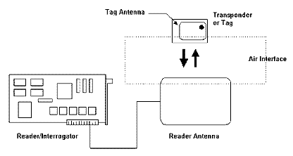
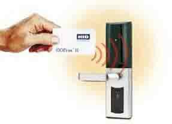
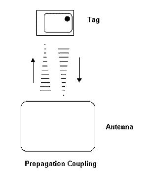
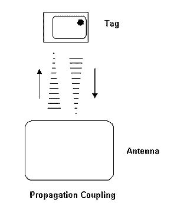

|
Tags หรือ Transponders
แท็ก (Tag) นั้นเรียกอีกชื่อหนึ่งว่าทรานสปอนเดอร์ (Transponder) มาจากคำว่าทรานสมิตเตอร์ (Transmitter) ผสมกับคำว่าเรสปอนเดอร์ (Responder) นั่นเอง ถ้าจะแปลให้ตรงตามศัพท์ แท็กก็จะทำหน้าที่ส่งสัญญาญหรือข้อมูลที่บันทึกอยู่ในแท็กตอบสนองไปที่ตัวอ่านข้อมูล การสื่อสารระหว่างแท็กและตัวอ่านข้อมูลจะเป็นแบบไร้สายผ่านอากาศ ภายในแท็กจะประกอบไปด้วย ชิปสารกึ่งตัวนำ (Semiconductor Chip) ซึ่งเชื่อมต่ออยู่กับสายอากาศ
แท็กอาจมีรูปร่างได้หลายแบบขึ้นอยู่กับการนำไปใช้งาน โดยอาจมีรูปร่างเหมือนบัตรเครดิตในการใช้งานทั่วไป หรือเล็กขนาดไส้ดินสอยาวเพียง 10 มิลลิเมตร เพื่อฝังเข้าไปใต้ผิวหนังสัตว์ในกรณีนำไปใช้ในงานปศุสัตว์ หรืออาจมีขนาดใหญ่มากสำหรับแท็กที่ใช้ติดกับเครื่องจักรขณะทำการขนส่ง แท็กอาจนำไปติดไว้กับสินค้าในร้านค้าปลีกทั่วไปเพื่อป้องกันขโมย โดยจะมีการติดตั้งสายอากาศของตัวอ่านข้อมูลขนาดใหญ่ไว้ตรงประตูทางออกเพื่อทำการตรวจจับขโมย
ชิปที่อยู่ในแท็กจะมีหน่วยความจำซึ่งอาจเป็นแบบอ่านได้อย่างเดียว (ROM) หรือทั้งอ่านทั้งเขียน (RAM) ทั้งนี้ขึ้นอยู่กับความต้องการในการใช้งาน โดยปกติหน่วยความจำแบบ ROM จะใช้เก็บข้อมูลเกี่ยวกับการรักษาความปลอดภัย เช่นข้อมูลของบุคคลที่มีสิทธิผ่านเข้าออกในบริเวณที่มีการควบคุมหรือระบบปฏิบัติการ ในขณะที่ RAM จะใช้เก็บข้อมูลชั่วคราวในระหว่างที่แท็กและตัวอ่านข้อมูลทำการติดต่อสื่อสารกัน
นอกจากนี้อาจมีการนำหน่วยความจำแบบ EEPROM มาใช้ในกรณีต้องการเก็บข้อมูลในระหว่างที่แท็กและตัวอ่านข้อมูลทำการสื่อสาร และข้อมูลยังคงอยู่ถึงแม้จะไม่มีพลังงานไฟฟ้าป้อนให้แก่แท็ก
เราสามารถแบ่งชนิดของแท็กออกเป็น 2 ชนิดคือ

รูปที่3 แสดงองค์ประกอบต่างๆ ของระบบ RFID
แท็กชนิดแอ็กทีฟนี้จะมีกำลังส่งสูงและระยะการรับส่งข้อมูลไกลกว่าแท็กชนิดพาสซีฟ นอกจากนี้ยังทำงานในบริเวณที่มีสัญญาณรบกวนได้ดี

รูปที่4 แสดงตัวอย่างการใช้งานแท็กและตัวอ่านข้อมูล (Reader )
Reader หรือ Interrogator
หน้าที่สำคัญของตัวอ่านข้อมูล (Reader หรือ Interrogator) ก็คือการรับข้อมูลที่ส่งมาจากแท็ก แล้วทำการตรวจสอบความผิดพลาดของข้อมูล ถอดรหัสข้อมูล และนำข้อมูลผ่านเข้าสู่กระบวนการต่อไป นอกจากนี้ตัวอ่านข้อมูลที่ดีต้องมีความสามารถในการป้องกันการอ่านข้อมูลซ้ำ เช่นในกรณีที่แท็กถูกวางทิ้งอยู่ในบริเวณสนามแม่เหล็กไฟฟ้าที่ตัวอ่านข้อมูลสร้างขึ้น หรืออยู่ในระยะการรับส่ง ก็อาจทำให้ตัวอ่านข้อมูลทำการรับหรืออ่านข้อมูลจากแท็กซ้ำอยู่เรื่อยๆไม่สิ้นสุด
ดังนั้นตัวอ่านข้อมูลที่ดีต้องมีระบบป้องกันเหตุการณ์เช่นนี้ที่เรียกว่าระบบ "Hands Down Polling" โดยตัวอ่านข้อมูล จะสั่งให้แท็กหยุดการส่งข้อมูลในกรณีเกิดเหตุการณ์ดังกล่าว หรืออาจมีบางกรณีที่มีแท็กหลายแท็กอยู่ในบริเวณสนามแม่เหล็กไฟฟ้าพร้อมกัน หรือที่เรียกว่า "Batch Reading" ตัวอ่านข้อมูลควรมีความสามารถที่จะจัดลำดับการอ่านแท็กทีละตัวได้
หลักการทำงานเบื้องต้นของระบบ
1. ตัวอ่านข้อมูลจะปล่อยคลื่นแม่เหล็กไฟฟ้าออกมาตลอดเวลา และคอยตรวจจับว่ามีแท็กเข้ามาอยู่ในบริเวณสนามแม่เหล็กไฟฟ้าหรือไม่ หรืออีกนัยหนึ่งก็คือการคอยตรวจจับว่ามีการมอดูเลตสัญญาณเกิดขึ้นหรือไม่
2. เมื่อมีแท็กเข้ามาอยู่ในบริเวณสนามแม่เหล็กไฟฟ้า แท็กจะได้รับพลังงานไฟฟ้าที่เกิดจากการเหนี่ยวนำของคลื่นแม่เหล็กไฟฟ้าเพื่อให้แท็กเริ่มทำงาน และจะส่งข้อมูลในหน่วยความจำที่ผ่านการมอดูเลตกับคลื่นพาหะแล้วออกมาทางสายอากาศที่อยู่ภายในแท็ก
3. คลื่นพาหะที่ถูกส่งออกมาจากแท็กจะเกิดการเปลี่ยนแปลงแอมปลิจูด, ความถี่ หรือเฟส ขึ้นอยู่กับวิธีการมอดูเลต
4. ตัวอ่านข้อมูลจะตรวจจับความเปลี่ยนแปลงของคลื่นพาหะแปลงออกมาเป็นข้อมูลแล้วทำการถอดรหัสเพื่อนำข้อมูลไปใช้งานต่อไป
กลับด้านบน
|


 
